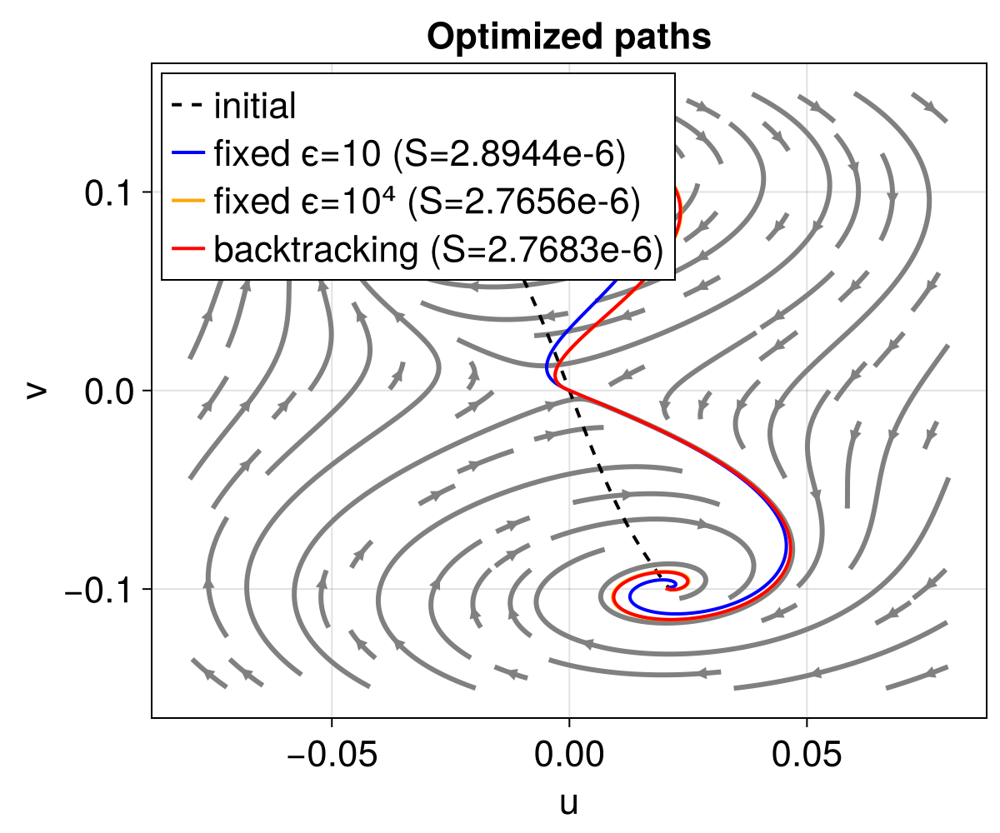
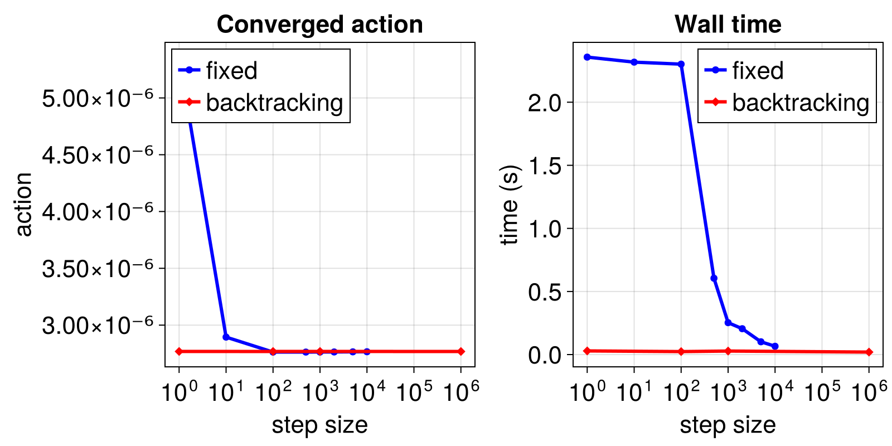

Adaptive step-size control for sgMAM
This example demonstrates the benefit of the backtracking line search built into GeometricGradient when computing instantons with minimize_simple_geometric_action.
We use the Kerr parametric oscillator (KPO), an underdamped 2D system (damping γ ≈ 1/295) whose instanton spirals near the attractors. A fixed step size must be carefully tuned: too small is slow, too large diverges. Backtracking removes this sensitivity entirely.
using CriticalTransitions, CairoMakieThe KPO drift and hardcoded Jacobian (see sgMAM_KPO for details):
const λ = 3 / 1.21 * 2 / 295
const ω0 = 1.0
const ω = 1.0
const γ = 1 / 295 # weak damping → underdamped
const α = -1
fu(u, v) = (-4γ * ω * u - 2λ * v - 4(ω0 - ω^2) * v - 3α * v * (u^2 + v^2)) / (8ω)
fv(u, v) = (-4γ * ω * v - 2λ * u + 4(ω0 - ω^2) * u + 3α * u * (u^2 + v^2)) / (8ω)
dfudu(u, v) = (-4γ * ω - 6α * u * v) / (8ω)
dfudv(u, v) = (-2λ - 4(ω0 - ω^2) - 3α * u^2 - 9α * v^2) / (8ω)
dfvdu(u, v) = (-2λ + 4(ω0 - ω^2) + 9α * u^2 + 3α * v^2) / (8ω)
dfvdv(u, v) = (-4γ * ω + 6α * u * v) / (8ω)
function H_x(x, p)
u, v = eachrow(x)
pu, pv = eachrow(p)
H_u = @. pu * dfudu(u, v) + pv * dfvdu(u, v)
H_v = @. pu * dfudv(u, v) + pv * dfvdv(u, v)
return Matrix([H_u H_v]')
end
function H_p(x, p)
u, v = eachrow(x)
pu, pv = eachrow(p)
H_pu = @. pu + fu(u, v)
H_pv = @. pv + fv(u, v)
return Matrix([H_pu H_pv]')
end
sys = ExtendedPhaseSpace{false, 2}(H_x, H_p)Doubled 2-dimensional phase space containing out-of-place functionsInitial path — a smooth "wiggle" connecting two symmetric attractors:
Nt = 500
s = collect(range(0; stop = 1, length = Nt))
xa = [-0.0208, 0.0991];
xb = -xa;
xsaddle = [0.0, 0.0]
xx = @. (xb[1] - xa[1]) * s + xa[1] + 4s * (1 - s) * xsaddle[1]
yy = @. (xb[2] - xa[2]) * s + xa[2] + 4s * (1 - s) * xsaddle[2] + 0.01sin(2π * s)
x_initial = Matrix([xx yy]')2×500 Matrix{Float64}:
-0.0208 -0.0207166 -0.0206333 … 0.0206333 0.0207166 0.0208
0.0991 0.0988287 0.0985574 -0.0985574 -0.0988287 -0.0991We compare three optimized paths: a small fixed step size (accurate but slow), a large fixed step size (fast but smoothed), and backtracking (fast and accurate). All runs use reltol=1e-8 so they stop at a consistent convergence threshold.
maxiters = 20_000
show_progress = false
reltol = 1.0e-8
res_small = minimize_simple_geometric_action(
sys, x_initial, GeometricGradient(; stepsize = 1.0e1, max_backtracks = 0);
maxiters, show_progress, reltol
)
res_large = minimize_simple_geometric_action(
sys, x_initial, GeometricGradient(; stepsize = 1.0e4, max_backtracks = 0);
maxiters, show_progress, reltol
)
res_bt = minimize_simple_geometric_action(
sys, x_initial, GeometricGradient(; stepsize = 1.0e3);
maxiters, show_progress, reltol
)
stream(u, v) = Point2f(fu(u, v), fv(u, v))
fig_paths = Figure(; size = (600, 500))
ax = Axis(fig_paths[1, 1]; xlabel = "u", ylabel = "v", title = "Optimized paths")
streamplot!(
ax, stream, (-0.08, 0.08), (-0.15, 0.15);
gridsize = (20, 20), arrow_size = 10, stepsize = 0.001, colormap = [:gray, :gray]
)
lines!(
ax, x_initial[1, :], x_initial[2, :];
label = "initial", linewidth = 2, color = :black, linestyle = :dash
)
lines!(
ax, res_small.path[:, 1], res_small.path[:, 2];
label = "fixed ϵ=10 (S=$(round(res_small.action, sigdigits = 5)))", linewidth = 2, color = :blue
)
lines!(
ax, res_large.path[:, 1], res_large.path[:, 2];
label = "fixed ϵ=10⁴ (S=$(round(res_large.action, sigdigits = 5)))", linewidth = 2, color = :orange
)
lines!(
ax, res_bt.path[:, 1], res_bt.path[:, 2];
label = "backtracking (S=$(round(res_bt.action, sigdigits = 5)))", linewidth = 2, color = :red
)
axislegend(ax; position = :lt)
fig_paths
The small fixed step size and backtracking both capture the spiral winding near the attractors, while the large fixed step size smooths it out. Backtracking achieves the same path quality as the small step size, but in a fraction of the time.
To quantify this, we sweep over step sizes and record the converged action and wall time:
stepsizes = [1.0e0, 1.0e1, 1.0e2, 5.0e2, 1.0e3, 2.0e3, 5.0e3, 1.0e4]
fixed_actions = Float64[]
fixed_times = Float64[]
for ss in stepsizes
t = @elapsed res = minimize_simple_geometric_action(
sys, x_initial, GeometricGradient(; stepsize = ss, max_backtracks = 0);
maxiters, show_progress = false, reltol = 1.0e-8
)
push!(fixed_actions, res.action)
push!(fixed_times, t)
end
bt_stepsizes = [1.0e0, 1.0e2, 1.0e3, 1.0e6]
bt_actions = Float64[]
bt_times = Float64[]
for ss in bt_stepsizes
t = @elapsed res = minimize_simple_geometric_action(
sys, x_initial, GeometricGradient(; stepsize = ss);
maxiters, show_progress = false, reltol = 1.0e-8
)
push!(bt_actions, res.action)
push!(bt_times, t)
endWith a fixed step size, the sgMAM implicit update acts as a low-pass filter on the path: larger ϵ smooths out fine features like the spiral winding near attractors. This creates a tradeoff — small ϵ preserves spiral detail (lower action) but converges slowly, while large ϵ converges fast but to a smoothed path with higher action. Very large ϵ diverges entirely.
fig_stats = Figure(; size = (800, 400))
ax1 = Axis(
fig_stats[1, 1]; xlabel = "step size", ylabel = "action",
xscale = log10, title = "Converged action"
)
scatterlines!(ax1, stepsizes, fixed_actions; label = "fixed", color = :blue, marker = :circle)
scatterlines!(ax1, bt_stepsizes, bt_actions; label = "backtracking", color = :red, marker = :diamond)
axislegend(ax1; position = :lt)
ax2 = Axis(
fig_stats[1, 2]; xlabel = "step size", ylabel = "time (s)",
xscale = log10, title = "Wall time"
)
scatterlines!(ax2, stepsizes, fixed_times; label = "fixed", color = :blue, marker = :circle)
scatterlines!(ax2, bt_stepsizes, bt_times; label = "backtracking", color = :red, marker = :diamond)
axislegend(ax2; position = :rt)
fig_stats
Backtracking sidesteps this: it starts with large steps for fast initial progress, then automatically shrinks the step size as the path approaches the minimum, allowing fine spiral features to develop. This gives both the speed of large steps and the accuracy of small ones.
This page was generated using Literate.jl.